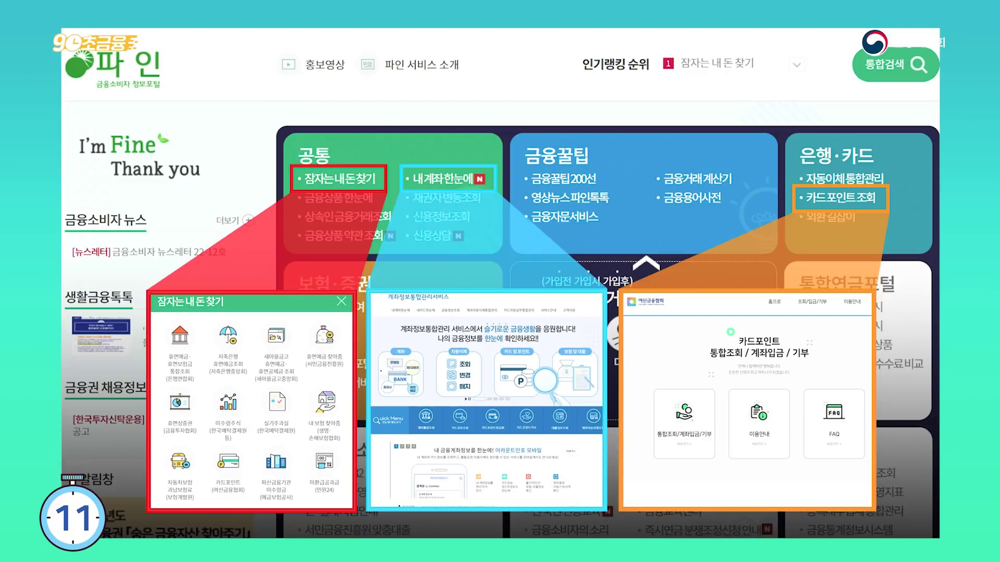
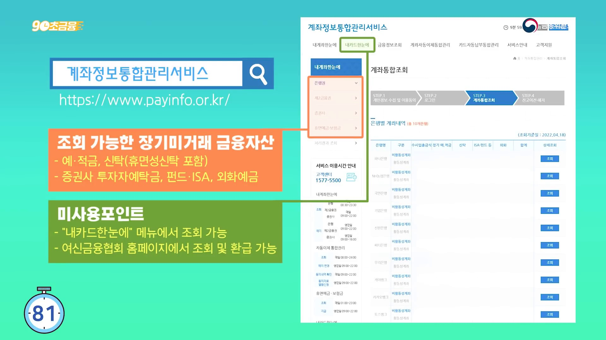
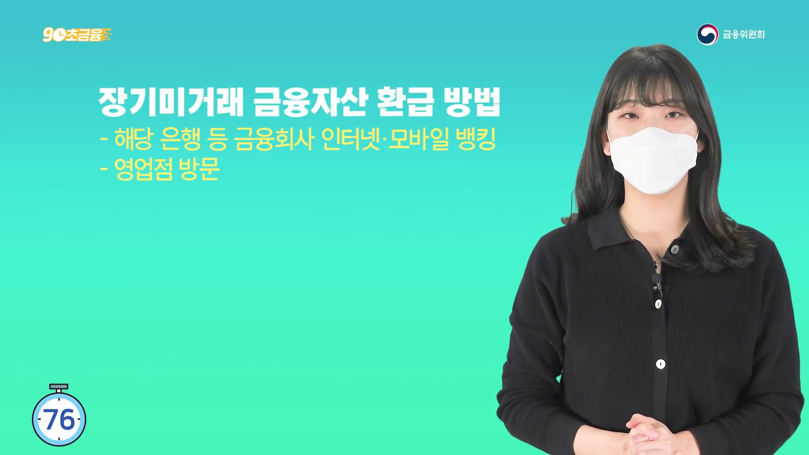
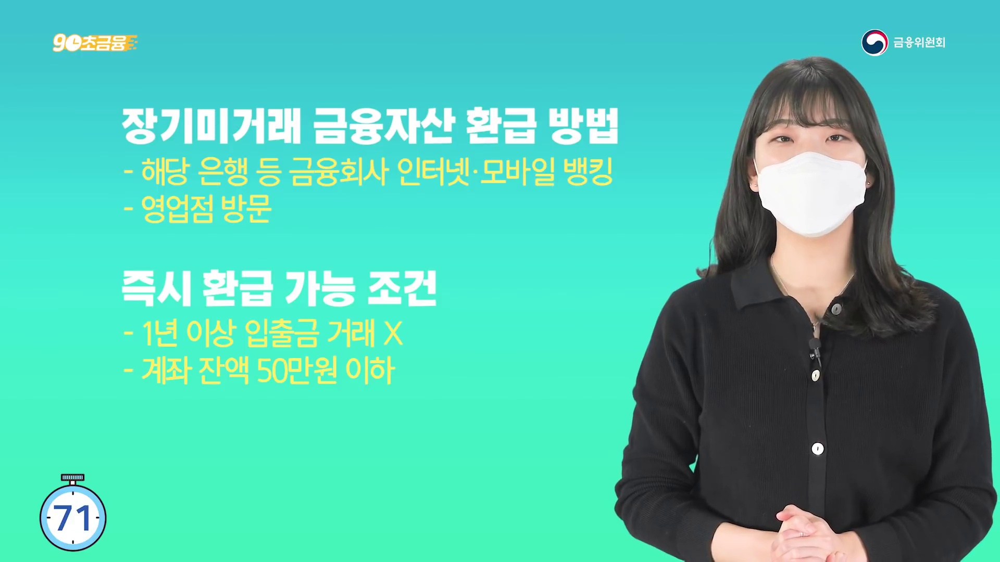
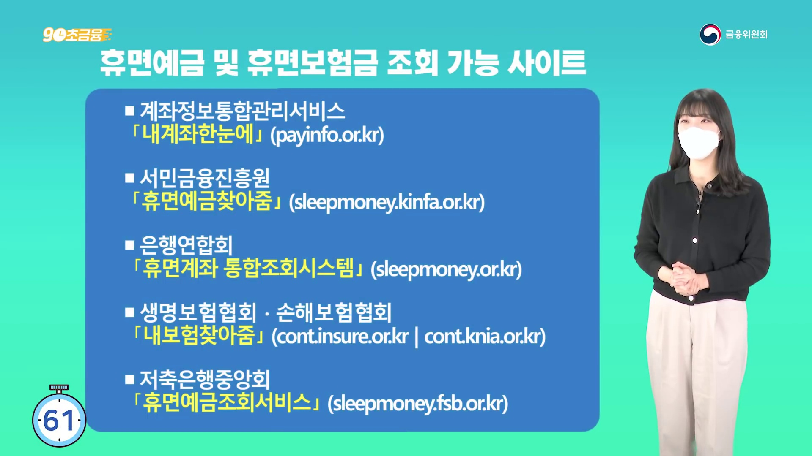
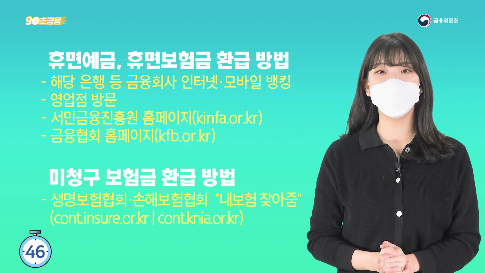

1
문자 링크 대신 공식 포털
금융위원회 로고와 금융소비자정보포털 파인 화면을 도입에서 먼저 보여줍니다.

금융위원회 공식 영상의 16:9 원본 장면을 자르지 않고 행동 순서에 맞게 배치했습니다.
금융위원회 로고와 금융소비자정보포털 파인 화면을 도입에서 먼저 보여줍니다.

계좌정보통합관리서비스의 공식 주소와 조회 가능한 자산 범위를 보여줍니다.

인터넷·모바일뱅킹 또는 영업점 방문이라는 기본 환급 경로입니다.

영상에서 제시한 조건을 보여주되, 실제 적용 여부는 해당 금융회사의 현재 안내를 따릅니다.

서민금융진흥원·은행연합회·보험협회·저축은행중앙회 등 공식 경로를 한 화면에서 구분합니다.

금융회사와 서민금융진흥원, 금융협회의 환급 경로를 마지막 행동으로 정리합니다.
